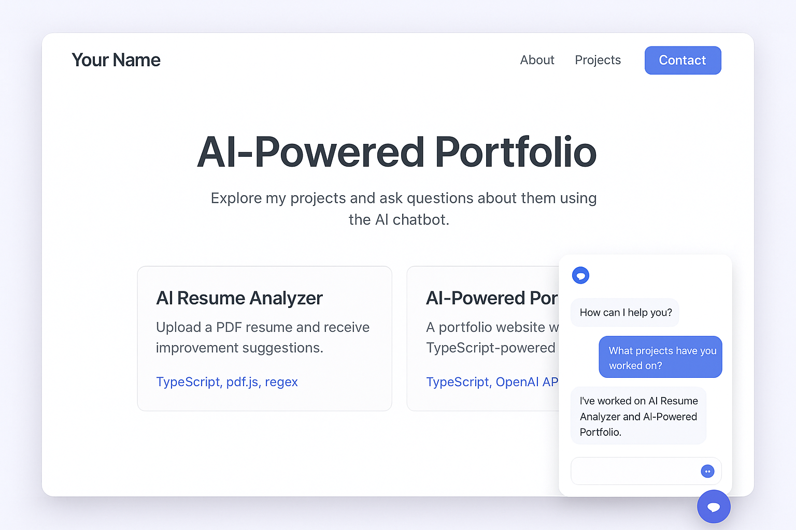
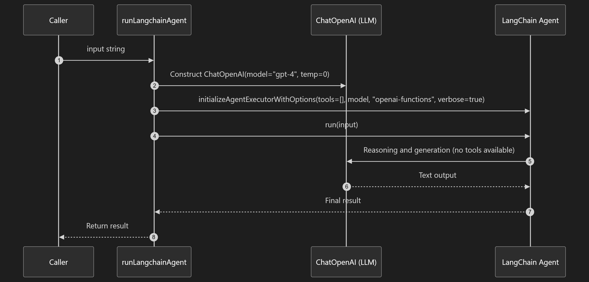

DemoVisual.png — general demo / UI overview (open locally to inspect).

AI Web App Technology Flowchart.png — system architecture and technology stack.

Gemma + llama.cpp + your Next.js API routes flowchart.png — local/offline LLM fallback and API route wiring.

mermaid_diagram_portfolio.png — exported mermaid flow (if available, source would help regenerate).